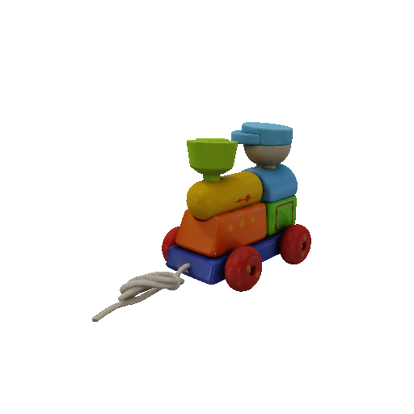

TL;DR: Combining Video diffusion with novel-view synthesis diffusion models increase pose and appearace consistency.
Generating novel views of an object from a single image is a challenging task. It requires an understanding of the underlying 3D structure of the object from an image and rendering high-quality, spatially consistent new views. While recent methods for view synthesis based on diffusion have shown great progress, achieving consistency among various view estimates and at the same time abiding by the desired camera pose remains a critical problem yet to be solved. In this work, we demonstrate a strikingly simple method, where we utilize a pre-trained video diffusion model to solve this problem. Our key idea is that synthesizing a novel view could be reformulated as synthesizing a video of a camera going around the object of interest---a scanning video---which then allows us to leverage the powerful priors that a video diffusion model would have learned. Thus, to perform novel-view synthesis, we create a smooth camera trajectory to the target view that we wish to render, and denoise using both a view-conditioned diffusion model and a video diffusion model. By doing so, we obtain a highly consistent novel view synthesis, outperforming the state of the art.
| Input | Zero-1-to-3 XL | ViVid-1-to-3 (ours) |
|  | ||

|

@article{kwak2023vivid,
title={ViVid-1-to-3: Novel View Synthesis with Video Diffusion Models},
author={Kwak, Jeong-gi and Dong, Erqun and Jin, Yuhe and Ko, Hanseok and Mahajan, Shweta and Yi, Kwang Moo},
journal={arXiv preprint arXiv:2312.01305},
year={2023}
}